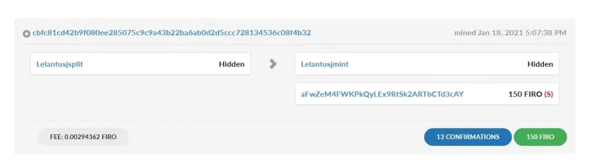

Firo × 币安 AMA 回顾
旧貌换新颜，从 Zcoin 到 Firo
整理：❤️ Chloe
隐私项目 🔥 Firo 已激活全新隐私协议 Lelantus，提供更高级别的匿名性。1 月 18 日晚六点，Firo 联合创始人 Reuben 做客币安英文电报群参与 AMA 活动，就 Firo 项目最新进展与用户现场互动问答，以下是 AMA 内容回顾。
主持人：大家好，欢迎来到 Firo 团队的 AMA！很荣幸为大家介绍 Firo 的联合创始人 Reuben！
你好，Reuben，很高兴你今天能加入我们，请你在聊天中介绍一下自己，以及分享一下 Firo 的概况。
Reuben：大家好，我是 Firo 的联合创始人兼项目管家 Reuben。我于 2016 年 10 月加入团队，目前负责项目的整体战略和运营方面的工作。在加入 Firo 之前，我是一家律师事务所的合伙人，专门为州政府提供制度框架方面的建议。我还经营着一家合气道道场，我是那里的首席教练。我也是一个叫 CMD 的街头格斗防卫系统的持证教练。
Firo，之前被称为 Zcoin，由 Poramin Insom 于 2016 年创立，他寻求提供财务隐私，并通过具有 ASIC 抗性的工作量证明来实现更具包容性的挖矿。
Firo 是一种去中心化的数字货币，主要通过 Lelantus 协议的燃烧和赎回模式，关注加密货币交易的「隐私」和「匿名」问题。Firo 也是第一个在其网络上实现默克尔树证明（MTP）用于平等挖矿的币种，以及 Dandelion++ 协议，该协议通过防止用户的 IP 地址与交易挂钩从而保护用户身份。
主持人：谢谢你的介绍！下面是 Firo 相关链接，方便大家参考。如果你想更多地参与并了解更多关于 Firo 的信息，请加入他们的 Telegram 频道。想了解最新的新闻，请在 Twitter 上关注他们！
网站：firo.org
钱包：firo.org/get-firo/download
论文：lelantus.io/lelantus.pdf
Telegram: t.me/firoorg
Twitter: twitter.com/firoorg
Reddit: reddit.com/r/firoproject
Linkedin: linkedin.com/company/firoorg
Facebook: facebook.com/firoorg
主持人：好了，现在进入今天 AMA 的第一个环节。我们有 5 个问题要问 Firo 团队。
Q1：Firo 的使命是什么？
Reuben：我们相信加密货币的初衷，就是成为一个不受任何实体控制的、不受审查的替代金融系统。这也是比特币诞生的初衷，它是对不负责任的和中央决定的印钞行为的回应，而印钞行为往往有利于富人和大公司。
然而要想真正做到不被审查，成为人们安全的交易方式，隐私是绝对必要的。如果有人可以跟踪你有多少钱，你和谁交易，你的钱就可以被控制，例如，有人可以强行要求你交出你的私钥，或者你支付的人突然知道你的财务历史。
我们的目标是成为一个全球数字版的现金，不对任何实体负责，甚至不对我们负责。我们的目标是让金钱成为公共事业和金融基础设施。
这是一个崇高的目标，朝着无现金的方向发展。以及对政府发行央行数字货币的兴趣增加，这些央行数字货币实际上是监视货币，这意味着如果我们相信加密货币的整个愿景，这一点就更加重要。
至今也只有少数区块链隐私解决方案（Zerocash、RingCT、Mimblewimble 和 Coinjoin 变种），而且都有其各种缺点。我们在 Firo 中的目标是在不需要信任、不牺牲可用性的情况下，提供最强的隐私级别，只依靠完善的加密假设，因此我们创建了 Lelantus！
Q2：什么是 Lelantus？
Reuben：Lelantus 是一种新的隐私支付协议，它确保了区块链交易的保密性和匿名性，交易规模小，验证时间短，不需要预信任机制。它的工作原理是，它允许用户烧毁他们的币，并将它们兑换成全新的币，并且之前没有任何交易记录。
Lelantus 在 4 天前刚刚在主网上线，你可以在这里看到一个 Lelantus 交易的样本。
explorer.firo.org/tx/cbfc81cd42b9f080ee285075c9c9a43b22ba6ab0d2d5ccc728134536c08f4b32

如你所见，资金来源完全不可见，甚至连找零金额都是隐藏的。在 Lelantus 的第二个版本中，用户甚至可以将兑换币的权利传递给其他人，这将隐藏所有的金额！
我们的 Lelantus 协议也以其优雅的设计和高度的实用性在密码学家和著名的区块链隐私开发者中赢得了赞誉。
到目前为止，Trail of Bits 已经对我们的加密库进行了审计，ABDK 咨询公司对底层加密技术进行了审计，并计划在可能的情况下进行进一步的审计。
你可以通过这个图表来了解它与其他隐私协议的比较。

如果你的技术水平较高，也可以阅读技术文件
Q3：拥有一个主节点需要多少 FIRO？Firo 的主节点除了帮助验证交易的有效性外，还有什么作用？
Reuben：Firo 中的主节点是激励性节点，它们承载着 Firo 的基础设施，并通过 LLMQ 链锁和即时发送提供额外的服务，如 51% 挖矿攻击保护。
为了防止女巫攻击，每个主节点都需要 1000 个 FIRO 的抵押品支持，以证明自身利益在其中，并鼓励诚信行为。
作为托管 FIRO 的基础设施和他们的附加服务的回报，他们赚取了 35% 的区块奖励，以目前主节点的数量计算，大约是 10% 的年收益率。作为激励性基础设施，主节点持有者可以投资规格更高的硬件，并有动力保持节点的更新和运行。这有助于 Firo 的区块链规模化，确保节点网络的稳健。
酷酷的小贴士，如果你不想托管自己的主节点，Binance 也有一款产品 Binance Staking 可以为你代为托管！
Q4：Firo 使用的是什么挖矿算法？
Reuben：Firo 使用 MTP（Merkle Tree Proof）挖矿算法，这是我们研究的结果。MTP 背后的想法是使用大量的内存，同时保持轻量级的验证。
技术总是在不断进步，虽然 MTP 很好地发挥了它的功能，让 Firo 保持为 GPU 可挖矿的币种，但 MTP 证明尺寸很大。
因此 Firo 计划在不久的将来改用 ProgPoW 变体。目前矿工的区块奖励是 50%（6.25 FIRO）。
我们得到了许多优质矿池的支持，如 MintPond、2Miners、F2pool 等。
Q5：从 Firo 的路线图中列出一个即将到来的东西
Reuben：在为数不多的几项中，ChainLocks。ChainLocks 利用 Firo 的主节点网络来防止 51% 攻击。
它的工作方式非常酷，因为主节点被分组形成了 quorums，这些 quorums 会在每一个区块上签收检查点。这意味着不会发生链重组，每一个添加的区块都会变成永久的。
ChainLocks 是超级重要的，因为我们已经看到了很多其他的币被 51% 攻击，如果我们想保持 GPU 可挖矿，有主节点提供额外的安全层不仅大大提高了币在交易中的安全性，也提高了可用性。
要想用 ChainLocks 51% 攻击 Firo，你需要控制 50% 以上的主节点，并且还要控制 51% 以上的算力。这也保证了网络的安全，不仅仅是矿工的安全，他们不一定是忠诚的，还包括与项目有利益关系的主节点。
与其他区块链中需要等待多次确认不同，有了 ChainLocks，只要确认了 1 个区块，交易就实现了最终性，而不是需要等待多次确认。我们会建议交易所减少充币所需的确认次数！
ChainLocks 应该很快就会到来，所以请继续关注公告！你可以阅读 Firo 路线图的其他内容
主持人：现在进入问答赛环节！奖品是共同瓜分等值 3000 USDT 的 FIRO
在开赛之前，我先提醒一下大家这个环节的规则
规则：
- 参与者需要有一个 Gmail 账户
- Firo 团队准备了 5 个问题
- 聊天中会发送一个带有问题的谷歌表格链接
- 每个谷歌表格将打开 2 分钟作为作答时间
参加者在 Google 表格内填写：
- 答案
- Telegram 用户名
- 钱包地址
Q1：Firo 目前使用的是什么挖矿算法？
- ProgPoW
- SHA-256
- RandomX
- MTP
答案是 MTP
Q2：设置一个主节点需要多少个 FIRO？
- 10
- 100
- 1000
- 10000
答案是 1000
Q3：Firo 现在使用什么隐私协议？
- Sigma
- Lelantus
- RingCT
- Zerocoin
答案是 Lelantus
Q4：Firo 矿工的区块奖励比例是多少？
- 45%
- 50%
- 60%
- 75%
答案是 50%
Q5：Firo 的最大供应量是多少？
- 1 亿
- 2140 万
- 5000 万
- 7000 万
答案是 2140 万
你都答对了吗？
更多项目动态，尽情持续关注 Firo 官网：firo.org